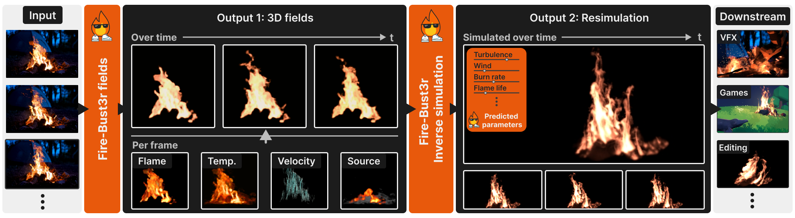
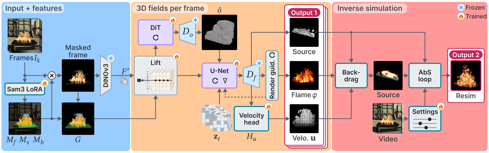

Abstract
We present Fire-Bust3r, a method that recovers an editable 3D fire from a single video of a real fire. It outputs the fields of a production fire solver (flame, temperature, smoke density, velocity and source region), so the fire can be rendered from novel viewpoints, edited and simulated further. No previous method recovers such a solver state from a single video: single-view methods reconstruct smoke and accurate fire capture so far required several calibrated cameras. Reconstructing fire in 3D is severely underconstrained, because flames are emissive, translucent and turbulent. A single image leaves their depth unobserved. We learn the missing depth from the solver's output fields themselves. We simulated 400 fires (100,000 states) and train a generative model on their compressed fields. Conditioned on image features lifted along the camera rays, it generates the full 3D state of the fire, including the depth that the camera never saw. At test time, a fire-specific differentiable renderer guides the sampler towards the input view while the learned prior fills in the unseen depth. In an inverse simulation step, we drag the flame back along the predicted velocity into the source region to improve the predicted source. We then estimate the solver parameters from the video's motion and shape. Fire-Bust3r outperforms single-view smoke reconstruction and image-to-3D baselines and it resimulates fires from stock footage. The result is either the 3D fields of every frame or a full simulation that is ready to be used and edited.
Method
A generative model trained on simulated fires lifts the video into the fields of a production solver; an inverse simulation step then recovers the source and the solver parameters.

3D fields from one video
Stitched over time, the reconstructed fields follow the footage frame by frame.
Karma render of our flame field in the footage's colours.
Novel views
The fields are full 3D volumes, so the fire can be seen from any side.
Resimulation in a production solver
The recovered source and parameters, simulated from an empty box in Houdini Pyro and rendered with Karma.
Edit it like any simulation
Change the solver or the shader, then simulate again.
Into a VFX shot
Our resimulation of a stock campfire, rendered and composited into a new scene.
BibTeX
@article{sautter2026firebust3r,
title = {Fire-Bust3r: Learning to Reconstruct and Resimulate Fire from a Single Video},
author = {Sautter, Tobias and Dihlmann, Jan-Niklas and Lensch, Hendrik P. A.},
journal = {arXiv preprint},
year = {2026}
}